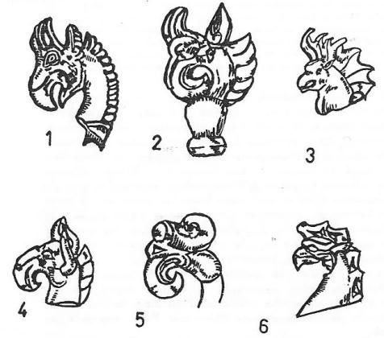

Şekil 61: Altay Hun çağı Başadar ve Tuyahta mezarlarında bulunmuş ve kumaşlar üzerine işlenmiş efsanevî gök kartalları. Aşağıda, ay, güneş ve gece ile gündüzün sembolleri görülür.
1. Kartal yuvasında doğan Şato hükümdarı: Kartaldan türeyiş efsanelerinin başında, şüphesiz ki meşhur Şato hükümdarı Li-Ko-yung'un doğuşu hakkındaki efsane gelir. Aynı hükümdarın kutsal bir şekilde doğuşuna ait başka efsaneler de vardır. Fakat bu bölümde bizi ilgilendiren motif, bu şekildeki bir doğuş şeklidir. Şato'lar, her iki Göktürk devleti zamanında da, Orta Asya’da Bar-köl bölgesinde otururlar ve devlet içinde önemli bir rol oynarlardı. Çin kaynaklarının da açık olarak belirttikleri gibi, onlar da Göktürklerin bir bölümü idiler. VIII. asrın ortalarından sonra Çin'in batısındaki Kansu'ya gitmişler ve oradan da Çin'in kuzeyindeki Yin-Şan dağlarına göç etmişlerdi. Yin-Şan dağları, Sarı Nehrin dirseğinin kuzeyindeki dağlardır. Tarih boyunca bu dağlar, Orta Asya ile Çin arasında bir kapı vazifesini görmüşlerdir. Bütün Orta Asya devletleri önce bu yaylaları ele geçirirler ve oradan Çin'e akınlar yaparlardı. Bu suretle Gobi Çölü'nün güneyindeki Yin-Şan dağları, onlara Çölü geçtikten sonra bir dinlenme imkânı verir ve hem de Çin'e geçmek için bir sıçrama tahtası vazifesini görürdü. İşte Çin, bu tehlikeyi gördüğü için, buraya savaşçı kavimler yerleştirerek kuzeyden gelen tehlikeleri önlemek istemişti. Şatoların da bu dağlara yerleştirilişlerinin başlıca sebebi budur. Fakat bu dağlara yerleştirilen Türk kavimleri de rahat durmamışlar ve zaman zaman Çin'in başına gaileler açmışlardır.
X. asırdan sonra, Çin tarihinde bir "Beş Sülâle" çağı başlar. Bu çağ, henüz daha iyice incelenmemiş; fakat Çin tarihinin önemli kısımlarından biridir. Bu Beş Sülâle'den üçünü, Şatolar kurmuş ve idare etmişlerdi. İlk Sülâleyi ise, işte bu kartal yuvasında hayat bulan Li Ko-yung kurmuştu. Tam manası ile bir şövalye ruhuna sahip olan Li Ko-yung'un hayatı, gerçek bir maceradır. Onun hayatı da ilk ve geniş olarak, bu kitabın yazarının doktora talebesi olan Çinli Wu Hsin-Tung tarafından incelenmiş ve doktora tezi olarak basılmıştır. Fevkalade bir atıcı olan Li Ko-yung, bir ağacın altında istirahat ederken bile, ağacın yapraklarını birer birer okla düşürmeği ihmal etmezdi. Bu Kağan'ın Kartal yuvasında doğuşu ile ilgili efsane hakkında maalesef fazla bir bilgi yoktur. Yalnızca Çin kaynaklarının ücra bir köşesinde, "Li Koyung’un kartal yuvasından doğmuş olduğu" söylenir diye ufak bir kayıt vardır.
Şato'ların kurdukları Sülâleler yıkıldıktan sonra, Çin kültürünü benimsemişler ve o çağın medenî sayılan bir hayat tarzını yaşamağa başlamışlardı. Bunun yanında eski Türk âdetlerini ve dilini de unutmamışlardı. Bu muhafazakârlıkta, Hıristiyanlığı kabul etmelerinin de rolü büyüktü. Hıristiyanlığın bir mezhebi olan Nesturîlik onları Çin kültürü içinde eritememiş ve etnik bakımdan Orta Asya’ya bağlı kılmıştı. Çünkü bu mezhep Orta Asya’da çok yaygın bir halde idi.
Şekil 62: Altay ve Sibirya Şamanları ile ilgili kartal resimleri. Bunların çoğu dev gök kartalları ile ilgili resimlerdir. 6. Çift horoz Pazırık kurganında bulunmuştur (İvanof, s. 38, 667, 389, 135, 392, 493, 671).
XII. ve XIII. asırdan itibaren Şatolar, Önggüt veya Ak-Tatar adı ile yeniden ortaya çıkarlar. Bunların reislerinden Ala-Kuş Tegin'in, Çinggiz Han'ın devletini kurmasında büyük yardımları olur. Ala-Kuş Tegin'in oğulları da Ay-Buka gibi biç bozulmamış öz Türkçe isimler taşırlardı.1187
Macar Kralı Arpad’ın babası Almos, Macar kavminin ve birliğinin kuruluşunda, birinci derecede rolü olan bir hükümdardı. Kendisi bir deha sahibi idi. Onun doğuşu ile ilgili efsane şöyledir:1188
"Macar Kralı Almos'un babası Ügek, kutsal kitapların yazdığı efsanevi hükümdar Magog (Me'cuc)’un soylarından geliyordu. Bu hükümdar, İskit ülkelerinde uzun zaman hakanlık yapmış ve soylu krallar arasında sayılmağa başlamıştı. Dentumoger adlı bir yerde oturuyordu. Eunedubelianus'ların reisi olan bir kabile başkanının kızı ile evlenmişti. Bu kızın adı da, Emesu idi. Kral Ügek'ın bu kızdan Almos adlı bir oğlu olmuştu. Bu çocuğa Almos adının verilmesinin sebebi de, kutsal ve insanüstü bir doğumla dünyaya gelmiş olması idi. Almos'un annesi henüz daha çocuğuna hâmile kalmadan, rüyasında bir doğan (Astur) görmüş. Doğan kadının etrafında uçarak dolanmış ve sonra da rahmine girmiş. Bir süre sonra da kadın gebe kaldığını anlamış. Ayı ve günü dolduktan sonra da çocuğunu doğurmuş. Fakat çocuk doğarken fevkalâde olaylar meydana gelmiş. Kadının karnından seller boşanarak coşkun çağlayanlar halinde akmış. Bunu duyanlar, büyük ve muzaffer bir hükümdarın doğduğunu müjdelemişler. Gerçekten de, çocuk büyüyüp de hükümdar olunca, herkesin ümit ettiği gibi bir kral olmuş."
Bu efsanede Hıristiyan tesirleri yok değildir. Bilhassa (Astur) cinsinden bir yırtıcı kuşun adının geçmesi, bu ihtimâli daha da fazlalaştırmıştır. Bununla beraber Macar bilginleri, bu efsanelerin doğrudan doğruya bir Hıristiyan rivayeti olduğuna dair nazariyelere yanaşmak istememişlerdir. Efsane Hıristiyanlaşmış olabilirdi. Fakat kökleri Hıristiyanlıktan gelemezdi. Efsanede gayet açık olarak görülen bazı Altay motifleri Macarların gözlerinden kaçmamıştı. Esasen bu efsanenin söyleniş ve yazılış tarzı da, eski Türk ve Moğol hakanlarının doğuşları hakkında söylenen hikâyelere uygundu.
Bu efsanede en şüpheli olan nokta, Almos'un annesinin doğumdan önce karnından sel boşandığını rüyasında görmesidir. Macar bilginleri bu konuda ikiye ayrılmışlardır. Bazılarına göre bu, doğrudan doğruya bir İran tesiridir. Gerçekten, eski İran'ın tanınmış hükümdarı Küros (Cyros)'un büyük annesi de oğlunun doğumundan önce böyle bir rüya görmüştü. Rüyada karnından boşanan sel, bütün Asya'ya yayılmış ve her tarafı sarmıştı. Bütün kâhinler, bir dünya fatihinin doğacağını söylemişler ve onu tebrik etmişlerdir. Bu efsane, Herodotos'un tarihinde açık olarak yazılmıştır. Esasen hu efsaneyi ilk olarak yazan Macar tarihi de, Herodotos'un tarihinden bahsetmektedir.
Fakat Macarlar, kendi efsanelerinin bu "Sel" motifini de, Herodo- tos'dan yapılmış âdi bir kopya gibi saymağı kabul edememişlerdir. Bizce, bunda haklıdırlar. Belki efsane yazarı, Herodotos'un üslûbunu taklit etmek istemiştir. Belki de, kendi yerli efsanesini İran'ınkine benzetmiş olabilirdi. Ayrıca kendi efsanesindeki bir cümleyi biraz değiştirerek, başka bir anlamda kullanmış olması da muhtemeldi. Mitoloji tetkiklerinde, bir deyimi başka bir anlam için kullanmağa, (Metaphorical) üslûb denir. Efsanede geçen "Sel" ve "Şelâle" sözleri, "Irmak" anlamına kullanılmış olabilirler. Meselâ ana kaynağın yazarı, bu sözleri bazen de "Soy" ve "Zürriyet" anlamına kullanmıştır.
Macar mitolojisi hakkında küçük, fakat öz, İngilizce bir kitap yazan G. Röheim'in, maalesef sel ile ilgili inançlar hakkında hemen hemen hiç bir bilgisi yoktur. Bu sebeple kitabımıza böyle bir bölüm ilave etmeği faydalı buluyoruz.
Türk Mitolojisinde sel: Orta Asya kavimleri dağdan şiddetle inen selleri daima kuvvet ve güçlülüğün bir sembolü olarak görmüşlerdir. Bu sebeple sel, Türk mitolojisinde kendini sık sık gösteren bir motiftir. Selçuk adını, Selcik (Sel-cik) sözü ile açıklayan Prof. Rasony ve diğerlerinin nazariyelerine de büyük bir önem veriyoruz. Biliyoruz ki, Çingiz-Han'ın kabilesinin adı Kıyan (Çoğulu:Kıyat) kabilesi idi. Tarihçi Reşideddin bu kabile adını da Türkçe kıyan, yani "kayan" sözü ile izah etmek istemişti. Ona göre bu söz, dağlardan aşağıya süratle inen seller için söylenirdi. Bunun için de, böyle çevik, cesur ve bahadır kimselere bu ad verilmişti. Bu kitapta, aynı konu üzerinde bir kaç defa durmuş bulunuyoruz. Bu söz, Moğollara da sonradan girmiş bir deyimdir. Bu da bize gösteriyor ki, sel Türklerde ve Moğollarda daima önemle göz önünde tutulmuş bir tabiat kuvvetidir.
Yedi Macar Kabilesinin Türeyişi: Bu konuya girmişken, "Yedi- Macar" kabilesinin türeyişleri ile ilgili efsaneyi de ele alalım: "Yedi- Macar" efsanesi, Macar tarihçileri tarafından bir tarih olayı gibi anlatılmıştır. Gerçekte ise, bunlar yedi efsane kahramanından başka bir şey değil idiler. Göktürk hükümdarı İstemi-Kagan da, Bizans imparatoruna yazdığı mektupta, kendisinin, "Yedi iklim hükümdarı" olduğunu söylemektedir. "Yedi iklim" yeryüzünün tamamını kapsayan bir deyimdir. Bu konulara, "Türk kozmolojisi" ve "Yedi sayısı" ile ilgili olarak sık sık dokunduk. Macar tarihleri bu 7 kişiye, Hetumager, yani "Yedi-Macar" derlerdi. Bu 7 kişinin de, 7 Macar kabilesinin başkanlarından başka kimse olmayacakları düşünülmüştü. Tanınmış Macar bilgini Nemeth'e göre "Yedi-Macar" deyimi, Türklerin "Dokuz- Oğuz", "On-Oğuz" gibi kabile adlarından başka bir şey değildi. Efsane şöyledir.1189:
"Söylendiğine göre, Macar ordusu Thuringia adlı bir bölgeye bir sefer yapmış ve bu savaşlarda büyük bir mağlubiyete uğramış. Macar ordusunda kim varsa, hepsi baştan aşağıya kadar öldürülmüş. Yalnızca yedi kişi kalmış ve bunların da kulakları kesilerek bırakılıvermiş. Bu yedi kişi de çaresiz memleketlerine dönmüşler.
Şekil 63:Altay Şamanlarının efsanevî kartalları (İvanof'tan).
Böyle utanç verici bir dönüşten dolayı, onları hiç kimse evlerine ve köylerine kabul etmemiş. Kendi aileleri de yüzlerini görmek istememişler ve evlâtlıktan reddetmişler. Bunun üzerine başka çare göremeyen bu yedi kişi, evden eve, köyden köye bir dilenci gibi dolaşmağa başlamışlar. Kimse de kendilerini tanımadığı için, hakaretten kurtulmuşlar. Gel zaman, git zaman bu yedi kişiye "Lazar"lar adı takılmış. Bunların eskiden komutan olmalarına rağmen, hiç kimse onları eski rütbeleri ile anmamış ve yalnızca Lazarlar diye çağırmış. Bu yedi kişi avare bir şekilde dolaşırlarken, kendi kendilerine şiirler söyler ve şarkılar düzerlermiş. İşte bu yedi kişi yavaş yavaş yeniden Macar milletini meydana getirmişler."
Bu yedi Lazar'ların kendi kendilerine şiirler söylemelerine ve şarkılar düzmelerine bakan Macarlar, bunları ilk Şamanlar olarak kabul etmişlerdi. Şüphesiz ki bu efsanede Hıristiyanlığın tesirleri de önemli rol oynamıştı. Aslen Hıristiyan olan Macar kralı onları aşağı görmüş ve yine onları aşağı sınıftan parya takımları gibi saymıştı. Çünkü bunlar Hıristiyan olmayan bir nevi eski ozanlar idiler. Macar krallarının bu eski Şamanları ve onlarla ilgili ananeleri hoş görmemesi de anlayışla karşılanmalıdır. Macar tarihinde buna benzer bir olay ve bu yedi kişiye benzer kahramanlar bulamayan Macar bilginleri, hemen kendileri ile eski bağları bulunan Vogul kabilelerinin mitolojisine başvurmuşlar ve bu motiflerin izâhını bu yolla yapmağa çalışmışlardır. Gerçekten Vogulların Gök Tanrısı Numi-Tarem'in 7 tane oğlu vardı. Vogul Şamanları, "Tarem'in yedi oğulları" dedikleri bu kahramanları, sazla çaldıkları koşmalarında anlatırlardı. Yukarıda da söylediğimiz gibi Macar bilginleri bu konunun incelenmesini çok dar tutmuşlar ve incelemelerinde yalnızca Kuzey-batı Sibirya'daki Vogul bölgesinde kalmışlardı.
Hâlbuki meselâ Yakut Türklerinde, bu ilk "Yedi Ata" an’anesini, daha açık ve daha sağlam bir şekilde izah edilmiş olarak görüyoruz. Yakutlara göre Tanrı ilk defa 7 insan yaratmıştı. Bütün Yakut boyları ve hatta insanlık bu 7 atadan meydana gelmişti. Bu konu ile ilgili metinleri yaratılışla ilgili bölümümüzle, bu kitabımızın diğer kısımlarında inceleyeceğiz(B. S. 595).
Macarlar, Osmanlı Devletinin ilk kuruluş devirlerine ait bir efsaneyi de örnek alarak, kendi türeyiş efsanelerinin Türk menşeini göstermek istemişlerdir. Osmanlı devletinin ilk beylerinden Er-Toğrul Gazi, rivayete göre rüyasında uçan bir güvercin görüyor ve uyanınca bu rüyasını tâbir ettiriyor. Rüyayı tabir edenler kendisine hükümdar olacağını söylüyorlar. Esasen Er-Toğrul'un adı da, bir doğan türünün ismi idi.1190

Şekil 64: Altay Hun çağına ait kutsal kartal figürleri.
Oğuz boylarının ongun'ları, yani kutsal sembolleri de doğan türlerinden meydana geliyordu.
Atillâ'nın kalkanı üzerinde de bir doğan resmi vardı. Bu, onun hükümdarlık arması (Heraldry) idi. Macarlar bu kuşa Turul derlerdi. Bunun Türkçe karşılığı ise Toğrul'dı. Atillâ'nın bu arması, Macarlar da devam etmiştir. Yalnız Macar Toğrullarının başında, ayrıca bir de taç vardı. Kral Geza zamanındaki Macarlar, bu armayı yanlarından hiç eksik etmezlerdi.1191
Böyle kutsal doğanlara eski Moğol edebiyatında da rastlamıyor değiliz. Meselâ Moğolların Gizli Tarihinde, Gökte uçun bir doğan, ayla güneşi tutuyor. Bu rüya da, hükümdarlığın onların eline geçeceğine bir delil olarak gösterilmişti.1192 Daha sonraki Moğol edebiyatında da bunun başka örneklerini görüyoruz. Meselâ Geser-Han’ın annesi rüyasında, gökten inen ve ağaçkakan kuşuna benzeyen bir kuş görüyor. Bu kuş, kadının karnına girerek yeniden doğmak istiyor ve bunun için de pek çok çaba gösteriyor.1193 Eski Orta Asya kültüründe, bu konu ile ilgili pek çok örnek vardır.
Macarların Kartal ve ördek boyları: Eski Türk boylarının kutsal sembollerinin hep doğan ve kartal nevinden yırtıcı kuşlar olduğunu biliyoruz. Macarların ilk hükümdar ailesinin adı Lebedias idi. Bu sözü de, Macarca Liba, "kaz ve ördek" ve Rusçadaki Lebed, "kuğu" sözleri ile açıklamak isteyenler vardır. Bu açıklamadan da cesaret alarak, Macarların ilk hanedanının "ördek-boyu" olduğunu ileri sürerler. Bu ilk hükümdar ailesinin yerine geçen Arpad Sülâlesi de "Kartal-Boyu"- ndan idiler. Bunu kaynaklar açık olarak söylerler. Kaynakların bu konu ile ilgili olarak verdikleri bilgiler şöyledir:1194
"Macarlar bir zamanlar, Hazar Devleti'nin egemenliği altında yaşarlardı. Bunların da başlıca iki kralları vardı. Bu krallardan biri, Almos'un oğlu Arpad ve diğeri de Lebedias idi. Hazar Hakanı, Macarların başına, kral olarak önce Lebedias'ı seçmiş ve ayrıca kızını da ona vermişti. Fakat Hazar Hakanının kızından biç bir çocuğu olmamış ve bu suretle de Lebedias'ın soyu sona ermişti. Bunun üzerine Macar kabilelerinin başına Arpad kral olarak geçti. Macarların başına geçen bu yeni kral ailesi "Kartal-Boyu"ndan geliyorlardı."
Macar bilginleri arasında, kartalın en kuvvetli kuş olması sebebi ile kartal sembolüne sahip olan kabilenin hükümdar olduğuna dair bazı nazariyeler ileri sürenler de olmuştur. Fakat Oğuz boylarından çok iyi biliyoruz ki, Oğuzlar arasında böyle bir kaide yoktu. Küçük kuşlu bir kabile de devlet kurabilirdi. Ayrıca yine Macarlar arasında, Yakut Türklerinde Şamanların "Kartal-boyu"ndan türediklerini gören bazı bilginler, Almos ve oğlunun bir Şaman olabilmesi ihtimalini de düşünmüşlerdir. Aslında Türk hükümdarları, zaten Baş-Rahip, yani Pontifex Maximum idiler.1195
Şekil 65: Hun çağı Altay kartalları.
Doğandan türeyen Kırgız kabilesi: Yukarıda gördüğümüz gibi, Sibirya ve Altay mitolojisi fazla sosyal değildi, içtimaî teşkilât ile devlet düzeni onları pek az ilgilendiriyordu. Onların en çok meşgul oldukları şeyler Şamanlar ile ruhlar âlemi idi. Güneye inildikçe ve hatta biraz daha Batıya gelindikçe, bu düşünce düzeni daha sosyal ve daha insanî bir mecraya girerdi. Bununla beraber masal motiflerinin başlıca örneklerini, her üç bölgede de bulmak mümkündür. Aşağıdaki kısa rivayet Kırgızlar arasından toplanmıştır. Fakat Türk mitolojisi bakımından büyük bir değer taşır ve Macar mitolojisini de açıklar. Burada "Küçük oğul" yerine, "Küçük Hatun''' geçmiştir. Bu Kırgız efsanesi Proto-Moğol mitolojisi ile de bir benzerlik gösteriyordu. Ne olursa olsun, bu da Macar ovalarından ta Çin denizine kadar uzanan Orta Asya mitolojisinin önemli bir parçası idi.1196
"(Söylendiğine göre), Kırgız kabilelerinden birinin bir atası ve bu atanın da üç karısı varmış. Bu üç kadından en küçüğü, gece uyurken bir rüya görmüş. Çadıra bir avcı doğan gelmiş ve yatağının etrafında uçuşarak dolaşmış. Sonra da nasıl olmuşsa gebe kalmış. Bu Kırgız kabilesini idare eden reislerin hepsi de, bu küçük kadının soyundan gelirlermiş."
Biliyoruz ki, Yakut Türklerinin büyük bir kısmı Sibirya'nın çok daha kuzeylerinde, Kuzey Buz denizi kenarlarında yaşarlardı. Orta Asya'daki Türk kavimleri ile bunların aralarını, pek çok başka diller konuşan Moğol vs. gibi kavimler kesmişti. Türklerin, bu kadar uzak bölgelere nasıl gittikleri ve yahut da diğer Türk kavimleri ile bunların aralarının nasıl kesildiği, şimdiye kadar bilginler arasında uzun münakaşalara yol açan bir konu olmuştur. Şimdiki halde akla en uygun gelen nazariyeler Yakutların daha önce çok güneylerde oturdukları; fakat sonradan herhangi bir sebeple kuzeye göç etmek zorunda kaldıkları hususundaki nazariyelerdir. Aşağıda bir özetini vereceğimiz efsane, Sibirya'nın karanlık ve soğuk bölgelerinde yaşayan Yakutların, güneydeki sıcak ve güneşli bölgelere karşı, kalplerinde nasıl bir gıpta ve hasret duyduklarını açık olarak gösterecektir. Güneşli ülkelere karşı olan bu imrenme hislerinin, gelen ve giden yolcuların anlattıklarına göre mi; yoksa eskiden yaşadıkları kendi yurtlarının efsanelerde yaşayan yankılarından mı doğmuş olduğunu iyice kestiremiyoruz. Bu efsanede anlatılan yeşil ve güneşli çayırın bir cennet olması da çok muhtemeldi. Yakutların cennetinde, hayat ağacı ile hayat suyu, birinci derecede rol oynayan önemli motiflerdir. Biliyoruz ki, Altaylıların cenneti de, Süt-Ak-Köl, yani, "Süt gibi Ak-Göl" idi. Altay Türklerine göre de, dünyaya yeni gelen bütün çocukların ruhları hep bu gölden gelirdi.
Devlet idaresinde hakanlar; halkın mistik hisleri bakımından ise, şamanlar önemlidir. Kuzeylerdeki dağınık bu Türk kavimleri arasında bir devlet teşkilâtı ve dolayısı ile de bir hakan yoktu. Bu sebeple, sosyal hayatta birinci derecede önemli şahıslar şamanlar oluyorlar ve Yakut mitolojisinde de birinci derecede rolü şamanlar oynuyorlardı. Güney Türklerinde ise şaman önemini kaybetmiş ve onun yerine toplumun gerçek sahibi olan hükümdar geçmişti. Yakutların bu çok güzel efsanesi şöyledir:1197
"Yakut Türklerinin inanışlarına göre şamanlar, yeryüzüne bir kartal tarafından getirilirlerdi. Onlara göre, şaman olacak bir çocuğun ruhu, çocuk daha doğmadan bir kartal tarafından yenirdi. Bu ruhu yiyen kartal, bundan sonra güneşli bir bölgeye göç ederdi. Ortası büyük bir çayırlıkla kaplı olan bu bölgede, güneşin ışıkları solmaz ve her zaman pırıl pırıl parlarmış.. İneklerin ilk defa süte geldiği yer de, yine bu çayırlık alan imiş. Tam bu çayırların ortasında ise, kırmızı bir çam ile bir gürgen veya bir de kayın ağacı varmış. İşte bu kartal, bu ağaçların üzerine gelir ve yumurtasını bıraktıktan sonra gidermiş. Yumurta, bir süre ağaçların üzerinde kaldıktan sonra yarılır ve içinden bir çocuk çıkarmış. Ağaçların altında da bir beşik bulunurmuş. Çocuk, yumurtadan çıkar çıkmaz, hemen bu beşiğin üzerine düşer ve orada büyümeğe başlarmış.
"Yakutların inanışına göre, iyi şamanlar kırmızı çam üzerindeki yumurtadan; kötü şamanlar ise, gürgen ağacı üzerindeki yumurtalardan çıkarlarmış. Yumurtadan çıkan bu şamanlar, tabii olarak hayatları süresince, "Kartal-Ana"ları tarafından korunurlarmış. Bu kartal, onların her işlerinde büyük bir yardımcı olurmuş.
Yine Yakutların söylediği bir masalda, bu efsane biraz daha değişik olarak şöyle anlatılmaktadır. Tabii olarak kadının niçin en küçük yumurtayı seçtiği pek anlaşılmıyor. Yalnız şunu unutmamak lâzımdır ki Küçük oğul, Türk mitolojisinde ve töresinde önemli bir rol oynuyordu. Küçük oğlan, baba ocağını devam ettiren bir (Ot-Tegin) olduğu gibi, babasının malına sahip çıkan da o idi:
"Büyük bir şamanın annesi, çocuğunu doğurmadan önce güzel bir rüya görmüş. Rüyasında büyük ve güzel bir çayırlık içinde bulunuyormuş. Güneşin ışıkları ile pırıl pırıl aydınlanan bu çayırlığın ortasında, üç kırmızı çam ağacı varmış. Çamların üzerinde de üç kuş yuvası varmış Kadın, bu ağaçlara yanaşmış ve bu yuvalardan en küçük olanını almış. Yuvayı alır almaz da karnında bir çocuğa gebe kalmış..."
Aşağıdaki efsane ise Buryat Moğollarına aittir. Burada, Türkler- deki kurdun yerine kartal geçmiştir. Orta Asya mitolojisine nazaran daha iptidaidir. Yukarıda da söylediğimiz gibi, Türk mitolojisi, bir "Büyük Devlet Mitolojisi"dir. Burada ise, toplumun başında bir Şaman vardır ve bunlar bir Şaman mitolojisidir. Bununla beraber efsane, çok güzel mitolojik motiflere sahiptir. Bu sebeple okuyucularımıza sunmağı faydalı gördük.1198:
"Çok önceleri, ne hastalık ve ne de ölüm varmış. Fakat zamanla kötü ruhlar yeryüzüne çıkıp, insanlara kötülük getirmeğe başlamışlar. Bunun üzerine de Tanrı, insanlara yardım etsin diye, gökten bir kartal göndermiş. Kartal, yeryüzüne inmiş ve insanların arasına gelmiş. Onlarla anlaşıp, birleşmek istemiş. Fakat ne o insanların ve ne de insanlar onun dilini ve düşüncesini anlayabilmişler. Kartal bakmış ki olmayacak, çaresiz yine göğe dönmüş ve Tanrıya olduğu gibi herşeyi anlatmış. Tanrı, başka bir yol düşünmüş ve kartala şöyle bir tavsiyede bulunmuş. Demiş ki, in yeryüzüne ve karşına çıkacak ilk insanı, senin dilini anlayabilecek bir şaman yap. Bunun üzerine kartal, yine kanatlarını açmış ve inmiş yeryüzüne. Bakmış ki, bir ağacın altında bir kadın uyuyor. Bu kadını kocasından ayırmış ve onunla yaşamağa başlamış. Kadın böylece kartaldan gebe kalmış ve sonra da kocasına dönmüş. Ayı ve günü dolduktan sonra kadın, bir erkek çocuk doğurmuş. Çocuk zamanla büyüyerek büyük bir şaman olmuş. Yeryüzünün en büyük şamanı ve bütün şamanların atası da bu olmuş. (Bazılarına göre ise yeryüzünün ilk şamanı, kartalla münasebette bulunan bu kadın idi)".
Şekil 65: Şaman resimlerinde, "çift başlı" ve "Dev Kartallar" (İvanof'tan).
Aşağıdaki okuma parçasında vereceğimiz önemli bilgiler, Rus etnografı V. N. Vasilyev'in, Dolgan ve Yakutlardaki kuş figürleri taşıyan sırıklar hakkında yazılmış makalesinden alınmıştır. Dolgan ve Yakutlar, birbirlerine çok yakın idiler. Bu sebeple deyimler ve inanışlar, iki kavim arasında büyük bir ayrılık göstermemektedirler. Köylerin ve çadırların yanına dikilmiş böyle "Gök direkleri"ne, Doğu ve Batı Sibirya kavimlerinin hemen hemen çoğunda rastlanırdı. Kuzey Buz denizinin doğu kıyılarında yaşayan bu kavimlerin kültüründe, "Çift başlı kartal" önemli bir yer tutmaktadır.1199 Yakut Türklerindeki "Çift başlı kartal" an'anesinin ön Asya’dan gelmiş olduğunu söyleyenlerde bulunmuştur. Yakutların medenî âlem ve hatta Orta Asya ile temasları, ancak bir kaç asırdan beri başlamıştır. Bu konuda koca Asya kıtasına bile tesirde bulunamayan ön Asya, nasıl olmuştur da kuzeyin karanlık ülkelerinde tecrit edilmiş olarak yaşayan Yakutların, en önemli ve yerli bir din motifini kendilerine benzetebilmiştir? Önce bunun cevabını bulmak lâzımdır. Türk mitolojisi bakımından büyük bir değer taşıyan bu bilgileri, aşağıda özet olarak verip yetinmeğe çalışacağız:1200
"Sibirya'da ve Altay bölgelerinde, şehirlerin veya yurtların yanında dikilmiş uzun bir sırık bulunur ve bu sırığın üzerinde de ağaçtan yontulmuş bir kuş resmi görülürdü. Bu kuşlara bilhassa Yakut Türklerinde ve onların komşuları Dolganlarda çok rastlanırdı. Sırığın tepesindeki bu kuşa, genel olarak "Gök kuşu" derlerdi. Yakutlar ise bu kuşa, kendi lehçelerinde Öksökö adını verirlerdi. Onlara göre bu sırık da, "Göğün direği" idi. Genel olarak bu kuş, "Çift başlı bir kartal" şeklinde yapılırdı. Kartalın niçin çift başlı olduğu da, efsanelerden pek anlaşılmıyor. "Dünyanın direği" dört köşe yontulmuş bir ağaçtı. Bu sırık göğe kadar uzanıyor ve gökte Tanrının kuvvet ve kudretini temsil eden büyük kartala kadar ulaşıyordu. Onlar bu basit sırığı, sembolik olarak öyle tasavvur ediyorlardı. Yakutların komşuları olan Dolganlara göre bu gök kuşu, büyük kanatları ile yere açılan göğün kapısını insanlara kapamıştı. Bu kuşlar genel olarak koyu kırmızı bir boya ile de boyanmışlardı. Yakutlarda da, bu gök sırıklarının başında, çift başlı bir kartal bulunurdu. Sembollük olarak yapılan 7 veya sekiz dallı gök sırıklarının her dalı, göğün bir katını gösterirdi. Çift başlı kartalın oturduğu katta artık, Tanrının çocuklarının ruhları dolaşırdı. Çoğu zaman bu ruhlar, bir kuş şeklinde uçar dururlardı. Bir çocuk doğacağı zaman, bu kuşlardan biri inerek çocuğun ağzından ona ruh verirdi, (öyle anlaşılıyor ki, çift başlı kartalda, bu kuş şeklindeki kuşların koruyucusu ve belki de atası idi.)"
Yukarıdaki efsanede "Gök direği" şeklinde görülen sütun, Orta Asya ve Sibirya mitolojisinde daha ziyade "Hayat ağacı" gibi tarif edilmiştir. Kanaatımıza göre yukarıdaki direk deyimi, daha ziyade sembolik olarak söylenmiştir. Yerle göğü birleştiren esas motif, Hayat ağacıdır. Nitekim yine Dolganlara ait aşağıdaki efsanede bu motif, daha açık olarak görülmektedir. Dolganların kullandıkları deyimler de, Yakut Türkçesinden alınmıştır.1201:
"(Yakut Türklerinin komşusu olan Dolganlar, kültür ve deyimler bakımından Altaylılara çok yakındırlar.) Onlara göre, zirveleri göğe kadar uzanan büyük bir ağaç vardı. Büyük Tanrı Ayı-Toyon ile karısı Suolta-İye'nin çocukları bu ağacın dallarında oynaşır ve orada yaşarlardı. Bir çocuk doğduğu zaman, şamanlar göğe gider ve bu ağacın dalları arasından bir ruh (ut) getirirlerdi. Göklerde uçuşan bu insan ruhları, tıpkı küçük kuşlara benziyorlardı."
Türkçe bürküt, "kartal" demektir. Aşağıdaki kısa metinde geçen Merküt deyimi de bu sözden gelmektedir. Burada soy anlamına sök sözü kullanılmıştır. Sök, Türkçe süyek, yani "kemik, soy" sözünün kısaltılmış şeklidir. Güneş doğunun, ay da batının sembolüdür. Buna göre kuşun başı kuzeye doğru olmalıydı. Bize göre ay gecenin yani kuzeyin; güneş de gündüzün, yani güneyin sembolü olmalı idiler. Bu duruma göre kuşun başı doğuya doğru yönelmiş olur ki, doğrusu da budur:
"Altaylardaki Teleüt Türkleri arasında, Merküt soyundan gelen bir boy (Sök) vardır. Bunlara göre de Merküt, efsanevî ve kutsal bir "Gök kuşu" idi. Bu kuş o kadar büyüktü ki, ay onun sol kanadını, güneş de sağ kanadını ancak kapayabiliyordu.1202
Şekil 67: Altay Hun çağına ait kartal arma ve sembolleri. Bunların av kartalları olması çok muhtemeldir (Rudenko, 1961, T. CXVII).